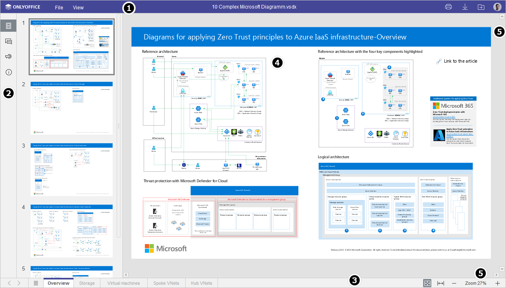
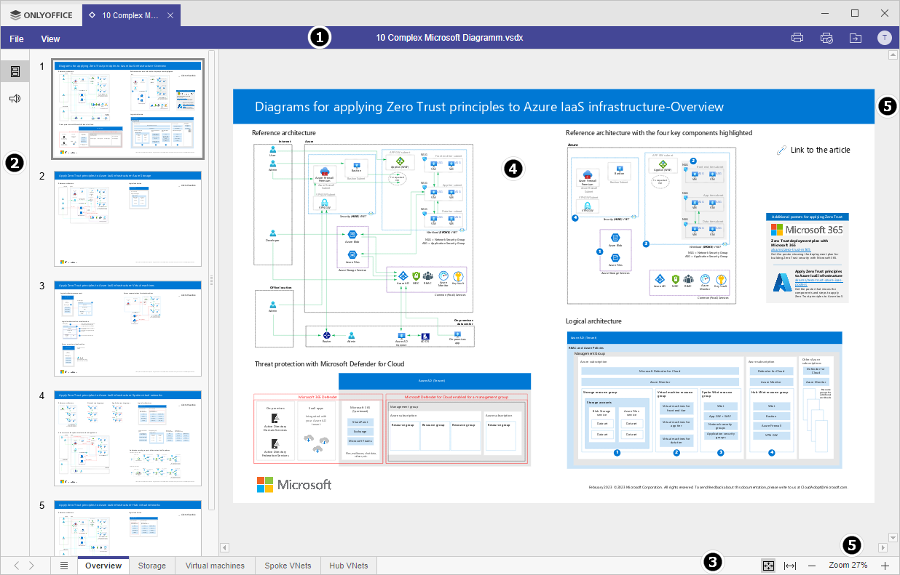

Upoznavanje sa korisničkim interfejsom Diagram Viewer-a
Diagram Viewer koristi interfejs sa karticama, gde su različite funkcije grupisane po karticama prema nameni.
Glavni prozor Online Diagram Viewer-a:

Glavni prozor Desktop Diagram Viewer-a:

Interfejs editora se sastoji od sledećih glavnih elemenata:
-
Zaglavlje editora prikazuje ONLYOFFICE logo, naziv fajla i kartice.
Sa desne strane zaglavlja editora, pored korisničkog imena, prikazuju se sledeće ikone:
- Otvori lokaciju fajla - omogućava otvaranje fascikle u modulu Dokumenti gde je fajl sačuvan, u novom tabu pregledača.
- Štampaj datoteku - omogućava štampanje fajla.
Gornja alatna traka prikazuje skup komandi za uređivanje u zavisnosti od izabrane kartice menija. Trenutno su dostupne sledeće kartice: Datoteka, Prikaz.
-
Leva bočna traka sadrži sledeće ikone:
- - omogućava otvaranje panela četovanja.
- - omogućava prikaz umanjenih prikaza stranica radi brze navigacije.
- - omogućava kontakt sa našim timom za podršku.
- - omogućava prikaz informacija o programu.
- Statusna traka koja se nalazi na dnu prozora editora prikazuje broj stranice, kao i određene obaveštenja (na primer, "Sve promene sačuvane", ‘Veza je prekinuta’ kada nema konekcije i editor pokušava ponovo da se poveže, itd.). Takođe omogućava podešavanje zumiranja.
- Radna površina omogućava pregled sadržaja dijagrama.
- Klizač sa desne strane i na dnu omogućava pomeranje unutar dijagrama i vertikalno i horizontalno.
Radi vaše praktičnosti, možete sakriti neke komponente i ponovo ih prikazati kada zatreba. Da biste saznali više o podešavanju prikaza, pogledajte ovu stranicu.